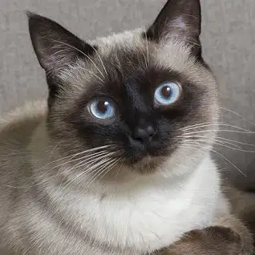
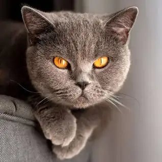
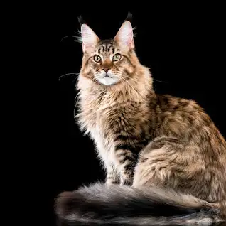
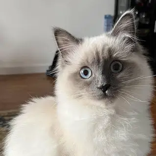
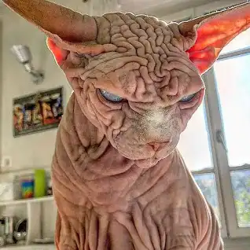

O gato ou gato doméstico é um mamífero carnívoro da família dos felídeos, muito popular como animal de estimação. Ocupando o topo da cadeia alimentar, é predador natural de diversos animais, como roedores, pássaros, lagartixas e alguns insetos.
    Os gatos têm um sentido de olfato muito desenvolvido, com cerca de 200 milhões de receptores olfativos, comparados aos 5 milhões dos humanos.
Eles podem saltar até seis vezes o comprimento do próprio corpo em um único salto, graças aos seus músculos poderosos e sua flexibilidade.
O ronronar dos gatos não indica apenas felicidade; também pode ser usado para acalmar o estresse, aliviar a dor e comunicar-se com suas crias.
Em média, os gatos passam cerca de 2/3 de suas vidas dormindo, o que equivale a aproximadamente 13-16 horas por dia.
Os gatos são animais crepusculares, ou seja, são mais ativos durante o amanhecer e o anoitecer, adaptando-se ao seu instinto de caça.
Os gatos passam cerca de 30% do tempo acordados se lambendo. Isso não apenas os mantém limpos, mas também regula a temperatura corporal e fortalece os laços sociais.
Embora não vejam no escuro completo, os olhos dos gatos têm uma estrutura especial que lhes permite ver melhor em condições de pouca luz do que os humanos.
Mesmo sendo domesticados, os gatos retêm fortes instintos de caça, mostrando habilidades impressionantes na captura de presas.